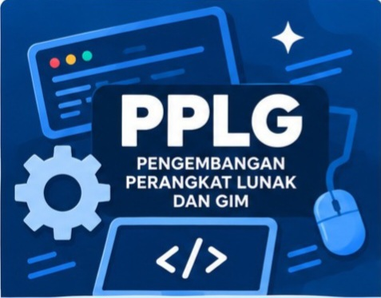

Profil Jurusan RPL/PPLG
Website profil jurusan yang berisi informasi tentang Rekayasa Perangkat Lunak (RPL) atau Pengembangan Perangkat Lunak dan Gim (PPLG), termasuk pembelajaran dan keterampilan yang dipelajari.

Tentang Project
Website Profil Jurusan RPL/PPLG dibuat untuk memperkenalkan jurusan kepada siswa, calon siswa, dan masyarakat. Website ini memberikan gambaran mengenai pembelajaran di bidang teknologi informasi, khususnya pembuatan website, aplikasi, dan pengembangan perangkat lunak.
Fitur Website
- Halaman beranda untuk memperkenalkan jurusan.
- Informasi profil dan tujuan pembelajaran jurusan.
- Informasi materi dan keterampilan yang dipelajari.
- Galeri kegiatan pembelajaran siswa.
- Informasi kontak dan sekolah.
- Tampilan responsif untuk komputer dan ponsel.
Proses Pembuatan
Website ini dibuat menggunakan HTML untuk menyusun struktur halaman dan CSS untuk mengatur tampilan, warna, ukuran teks, jarak, serta tata letak.
Informasi Project
Jenis: Website Informasi Pendidikan
Teknologi: HTML dan CSS
Status: Selesai